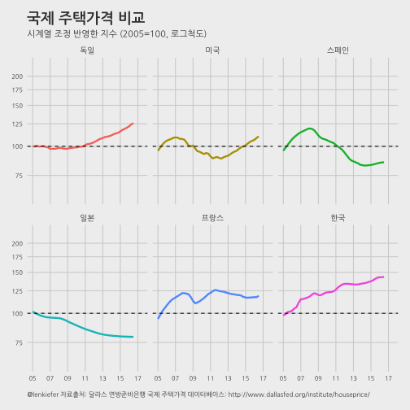
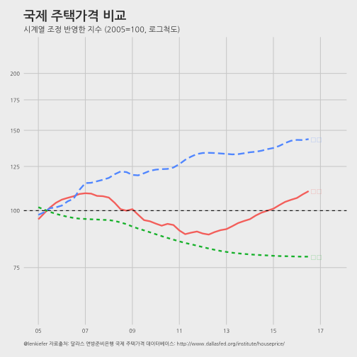

데이터 과학자와 함께 하는 제19대 대통령 선거
주택가격 변동 국가 비교(한국, 독일, 스페인, 프랑스, 일본, 미국)
1. 주택가격 국제 비교 1
달라스 연방준비은행은 국제 주택가격 데이터베이스를 통해 주택정보를 엑셀 형태로 제공하고 있다. Federal Reserve Bank of Dallas 웹사이트 접속해서 데이터를 International House Price Database에서 국제 주택데이터를 다운로드 받을 수 있다.
많은 나라가 있지만 한국과 비교가 많이 되는 5개국을 뽑아 한국 포함 총 6개국에 대해서 2005년을 기준점 100으로 놓았을 때 주택가격 동향을 비교해 보자.

2. 주택가격 국제 비교 시각화
Global house price trends 블로그에 게시된 코드를 기반으로 오류를 수정하고, 2016년 3분기 데이터 hp1603.xlsx 최신 국제주택가격 데이터를 반영했으며, 한글화하였다.
2.1. 환경설정
# 0. 환경설정 --------------------------------------------------------------------------
library(data.table)
library(tidyverse)
library(lubridate)
library(readxl)
library(zoo)
library(ggthemes)
library(animation)
library(extrafont)
loadfonts()2.2. 국제 주택가격 데이터
주택가격 국제 비교를 위해 사용된 한국 데이터를 사용했다고 밝히고 있다. 한국 및 국제 주택가격 표준화를 위해 사용된 방법을 참고한다. 최신 국민은행 KB주택가격통향 데이터를 비교하여 살펴보면 좋겠다. 국제 비교를 위해 2005년을 100으로 넣고 국제비교를 했지만, 국민은행 주택가격동향에서는 가장 최근 시점을 100으로 놓고 상대적으로 과거 시세 정보를 표현하고 있다.
# 1. 데이터 가져오기 --------------------------------------------------------------------------
hpi <- read_excel("data/hp1603.xlsx",sheet="HPI")
var_names <- c("date", "Australia", "Belgium", "Canada", "Switzerland", "독일",
"Denmark", "스페인", "Finland", "프랑스", "UK", "Ireland", "Italy",
"일본", "한국", "Luxembourg", "Netherlands", "Norway", "New Zealand",
"Sweden", "미국", "S. Africa", "Croatia", "Israel", "blank", "Aggregate")
names(hpi) <- var_names
hpi$date <- as.Date(as.yearqtr(hpi$date, format = "%Y:Q%q"))
hpi <- hpi %>% dplyr::filter(!is.na(date)) %>% dplyr::select(-blank, -Aggregate)
# 2. 데이터 정제 --------------------------------------------------------------------------
hpi.dt <- hpi %>% gather(key=country,value=hpi ,-c(date)) %>% data.table()
dlist<-unique(hpi.dt$date)2.3. 한국을 포함한 6개국 주택가격 변화 시각화
“한국”, “독일”, “스페인”, “프랑스”, “일본”, “미국” 총 6개국에 대해 2005년 주택가격을 100으로 두고 계절변동을 반영한 시계열 주택가격변동을 정적 그래프를 통해 시각화한다.
# 3. 주택가격변동 시각화 --------------------------------------------------------------------------
korea_friends <- c("한국", "독일", "스페인", "프랑스", "일본", "미국")
# 3.1. 주택가격 국제 비교 ------------------------------------------------------------------
ggplot(data=hpi.dt[year(date)>2004 &
(country %in% korea_friends)],
aes(x=date,y=hpi, color=country, label=country))+
geom_line(size=1.1)+
scale_x_date(breaks=seq(dlist[121],dlist[167]+years(1),"2 year"),
date_labels="%y",limits=c(dlist[121],dlist[167]+years(1)))+
facet_wrap(~country)+
theme_minimal()+ geom_hline(yintercept=100,linetype=2)+
scale_y_log10(breaks=seq(75,200,25),limits=c(60,225))+ theme_fivethirtyeight()+
theme(legend.position="none", plot.caption=element_text(hjust=0,size=8),plot.subtitle=element_text(face="italic"),
axis.text=element_text(size=7.5))+
labs(x="",y="",title="국제 주택가격 비교",
caption="\n@lenkiefer 자료출처: 달라스 연방준비은행 국제 주택가격 데이터베이스: http://www.dallasfed.org/institute/houseprice/",
subtitle="시계열 조정 반영한 지수 (2005=100, 로그척도)") +
theme(text=element_text(family="NanumGothic"))
2.4. 한국, 일본, 미국 주택가격 시각화
facet 그래프가 아니라 한국, 일본, 미국 주택가격 변화를 한장의 그래프로 시각화하여 비교를 용이하게 한다.
# 3.2. 한국, 일본, 미국 비교 ------------------------------------------------------------------
ggplot(data=hpi.dt[year(date)>2004 & (country %in% c("미국", "일본", "한국"))],
aes(x=date,y=hpi,color=country,label=country,linetype=country)) +
geom_line(size=1.1)+
theme_minimal()+ geom_hline(yintercept=100,linetype=2) +
scale_x_date(breaks=seq(dlist[121],dlist[167]+years(1),"2 year"),
date_labels="%y",limits=c(dlist[121],dlist[167]+years(1))) +
geom_text(data=hpi.dt[date==dlist[167] & country %in% c("미국", "일본", "한국")], hjust=0, nudge_x=30) +
scale_y_log10(breaks=seq(75,200,25),limits=c(60,225))+ theme_fivethirtyeight()+
theme(legend.position="none",plot.caption=element_text(hjust=0,size=7),plot.subtitle=element_text(face="italic"),
axis.text=element_text(size=7.5))+
labs(x="",y="",title="국제 주택가격 비교",
caption="\n@lenkiefer 자료출처: 달라스 연방준비은행 국제 주택가격 데이터베이스: http://www.dallasfed.org/institute/houseprice/",
subtitle="시계열 조정 반영한 지수 (2005=100, 로그척도)") +
theme(text=element_text(family="NanumGothic"))
2.5. 한국을 포함한 6개국 주택가격 변화 애니메이션
한국을 포함한 6개국 주택가격 변화를 애니메이션으로 시각화한다.
# 3.3. 주택가격 변동 애니메이션----------------------------------------------------
hpi.plot<-function(i){
ggplot(data=hpi.dt[year(date)>2004 &
date<=dlist[i] &
country %in% korea_friends],
aes(x=date,y=hpi,color=country,linetype=country,label=country))+
geom_line(size=1.1)+
scale_x_date(breaks=seq(dlist[121],dlist[167]+years(1),"1 year"),
date_labels="%Y",limits=c(dlist[121],dlist[167]+years(1)))+
geom_text(data=hpi.dt[date==dlist[i] &
country %in% korea_friends],
hjust=0,nudge_x=30)+
theme_minimal()+ geom_hline(yintercept=100,linetype=2)+
scale_y_log10(breaks=seq(75,200,25),limits=c(75,200))+ theme_fivethirtyeight()+
theme(legend.position="none",plot.caption=element_text(hjust=0),plot.subtitle=element_text(face="italic"))+
labs(x="",y="",title="국제 주택가격 비교",
caption="\n@lenkiefer 자료출처: 달라스 연방준비은행 국제 주택가격 데이터베이스: http://www.dallasfed.org/institute/houseprice/",
subtitle="시계열 조정 반영한 지수 (2005=100, 로그척도)") +
theme(text=element_text(family="NanumGothic"))
}
oopt = ani.options(interval = 0.15)
saveGIF({for (i in 121:167) {
g <- hpi.plot(i)
print(g)
print(i)
ani.pause()
}
for (i2 in 1:20) {
print(g)
ani.pause()
}
}, movie.name="hpi_compare international.gif",ani.width = 750, ani.height = 400)